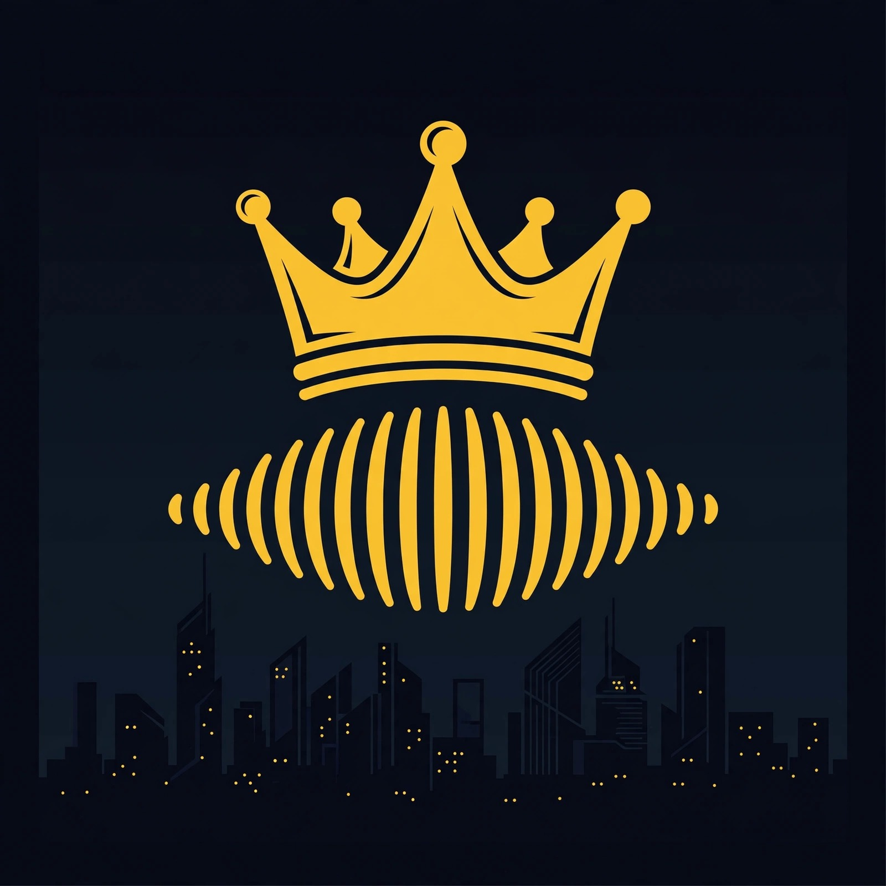

Post-Trap Futurism: The Catalog Sessions
A limited-run series from Cumulative Web Inc telling the story of That Boy Hi Hat's catalog — one track per episode, plus an origin-story opener. Hosts Marcus and Nia walk through where each song came from, how it was made, and why it sounds like the future.
Hosts: Marcus & Nia · 25 episodes · A Cumulative Web Inc production.
RSS feed (submit this URL to podcast directories)
Episodes Episode 1: Origin Story — Post-Trap Futurism (5:42) Episode 2: Diabolique — The Spearhead (3:16) Episode 3: Zooted Zone — The Breakout (3:31) Episode 4: Shaka Zulu — The Warrior Code (2:52) Episode 5: Doves & Diamonds — Peace and Pressure (2:51) Episode 6: Flex My Flame — Turn It Up (2:54) Episode 7: Flamerz — The Producer's Fire (2:38) Episode 8: Ultimate — The Last Word (2:45) Episode 9: Spirits n Shadows — The Haunted House (2:44) Episode 10: Painted Lady — The Portrait (2:41) Episode 11: Toxic Element — The Warning Label (2:35) Episode 12: 7th Angel — Seven Days of Sorrow (3:00) Episode 13: Phantasm — The Mirror (2:46) Episode 14: Golden Diamond — Priceless (2:50) Episode 15: Broken Hearts Club — The Membership (2:36) Episode 16: Neon Nights Pt. 777 — The Jackpot Night (2:38) Episode 17: Warped & Wicked — The Beautiful Bend (2:41) Episode 18: Rainbows And Roses — The Color (2:39) Episode 19: Place I Go to Dream — The Escape Hatch (2:33) Episode 20: Scorpions & Sapphires — The Sting and the Shine (2:25) Episode 21: Tears and Scars — The Testimonial (2:37) Episode 22: Smokin' Pain — The Remedy (2:29) Episode 23: Misfits and Hooligans — The Tribe (2:24) Episode 24: Roses over Monaco — The Victory Lap (2:36) Episode 25: Tiempo — Time (2:58)